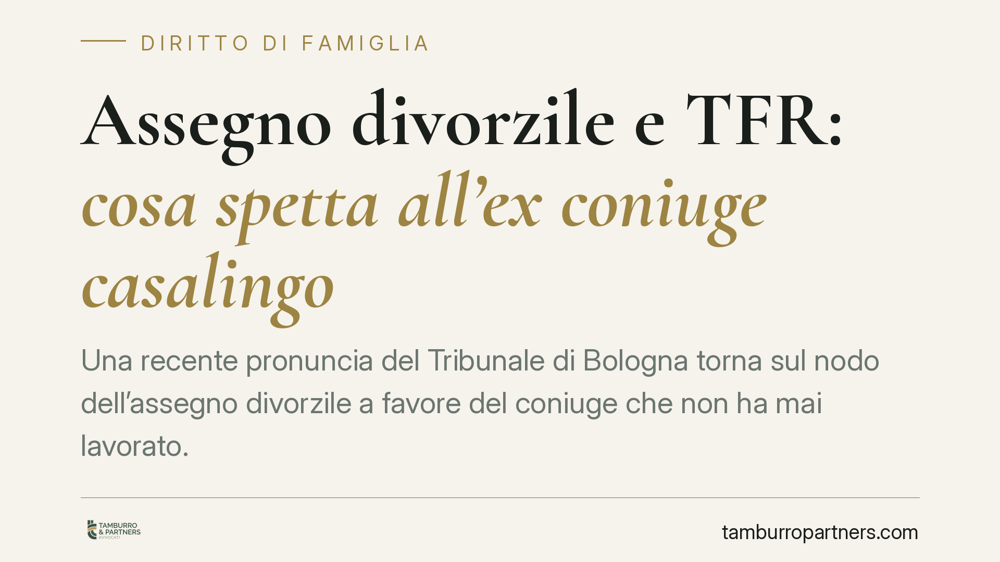

Assegno divorzile e TFR: cosa spetta all'ex coniuge casalingo
Una recente pronuncia del Tribunale di Bologna torna sul nodo dell'assegno divorzile a favore del coniuge che non ha mai lavorato. Il giudice riconosce un importo in funzione assistenziale, ma esclude la componente perequativo-compensativa per difetto di prova e nega la quota di TFR maturata prima della domanda di divorzio. Un caso utile per capire cosa va dimostrato e come.

Il caso
Una coppia divorzia dopo molti anni di matrimonio. L'ex marito è un medico specialista con redditi elevati; l'ex moglie non ha mai svolto attività lavorativa retribuita, dedicandosi alla famiglia. Il Tribunale di Bologna le riconosce un assegno divorzile mensile in funzione assistenziale, ma esclude la componente perequativo-compensativa e nega qualsiasi quota sul trattamento di fine rapporto (TFR) già maturato prima del deposito della domanda di divorzio.
La decisione è interessante non per l'importo, ma per il metodo: mostra con chiarezza quali fatti vanno provati per ottenere ciascuna voce.
Inquadramento normativo
L'assegno divorzile è disciplinato dall'art. 5, comma 6, della L. 898/1970. Le Sezioni Unite della Cassazione, con la sentenza n. 18287/2018, hanno chiarito che si tratta di un assegno di natura composita: insieme assistenziale e perequativo-compensativa. Non sono, quindi, tre funzioni autonome, ma profili di un unico giudizio che il giudice conduce in modo unitario.
Il profilo assistenziale mira a garantire al coniuge economicamente più debole un sostegno quando non dispone di mezzi adeguati e non può procurarseli per ragioni oggettive. Il profilo perequativo-compensativo riconosce invece il contributo dato dal richiedente alla formazione del patrimonio comune e familiare, e il sacrificio di aspettative professionali compiuto nell'interesse della famiglia.
La differenza decisiva sta nella prova. Per il profilo assistenziale basta dimostrare lo squilibrio reddituale e l'impossibilità di colmarlo. Per il profilo perequativo-compensativo occorre dimostrare qualcosa di più: non è sufficiente dire di essere stati casalinghi, bisogna provare che quella scelta ha prodotto un sacrificio professionale concreto (ad esempio una carriera abbandonata, un titolo non speso, occasioni rinunciate) e che vi è stato un correlato arricchimento dell'altro coniuge.
Nel caso bolognese il primo profilo era provato: da qui l'assegno assistenziale. Il secondo no: mancava la dimostrazione di un'attività professionale sacrificata e di un apporto quantificabile. Di qui l'esclusione della componente perequativo-compensativa.
Il TFR e lo spartiacque della domanda
Sul trattamento di fine rapporto opera l'art. 12-bis della L. 898/1970. La norma attribuisce all'ex coniuge titolare di assegno divorzile una quota del TFR dell'altro, pari al 40% dell'indennità riferita agli anni di matrimonio. La condizione è precisa: la quota spetta sull'indennità percepita all'atto della cessazione del rapporto, purché il TFR non fosse già stato riscosso al momento della domanda di divorzio.
La data di deposito della domanda di divorzio funziona quindi da spartiacque. Il TFR già maturato e percepito prima di quel momento resta fuori dal perimetro dell'art. 12-bis. Nel caso esaminato, la quota reclamata si riferiva a trattamenti collocati prima della domanda: il Tribunale l'ha correttamente esclusa.
Implicazioni pratiche
Per chi affronta un divorzio dopo un matrimonio con ruoli familiari sbilanciati, due indicazioni emergono con nettezza.
Prima: l'assegno non è automatico né uniforme. Ottenere un importo assistenziale è più accessibile; ottenere il riconoscimento del sacrificio professionale richiede materiale probatorio mirato.
Seconda: il TFR non è sempre aggredibile. Tempistica della domanda e momento di percezione dell'indennità incidono in modo determinante su ciò che si può chiedere.
Cosa fare in concreto
- Documentate l'intera storia economica del matrimonio: redditi, patrimoni, intestazioni, contributi diretti e indiretti alla famiglia.
- Raccogliete prove del percorso professionale interrotto o mai avviato: titoli di studio, offerte di lavoro rifiutate, attività cessate, scelte legate alle esigenze familiari.
- Collegate il sacrificio professionale all'incremento patrimoniale o di carriera dell'altro coniuge: la componente perequativo-compensativa vive di questo nesso.
- Verificate la posizione del TFR rispetto alla data della domanda di divorzio: stabilite se e quando l'indennità sia stata maturata o percepita.
La costruzione dell'impianto probatorio risulta più solida quando è avviata con anticipo rispetto al deposito della domanda, perché consente di reperire e organizzare i documenti rilevanti senza vincoli di tempo.
---
*Contributo informativo a cura di Tamburro & Partners - Avv. Giuseppe Tamburro. Non costituisce parere legale.*
Ogni famiglia ha il suo equilibrio.
Separazione, divorzio, affidamento, assegno: se vuoi un confronto riservato su una specifica situazione, scrivi allo studio. Ti rispondiamo entro un giorno lavorativo.